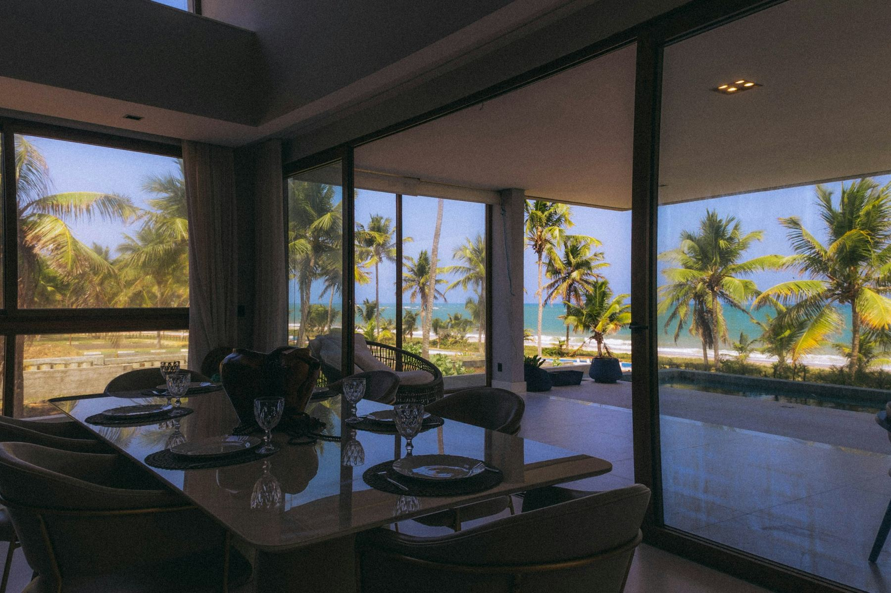
01 · Interiorismo · Costa Caribe
Casa Mar Adentro
Un comedor abierto al mar: vidrio de piso a techo y una sola mesa larga para toda la familia.
Sitio de ejemplo · Marca ficticia · Hecho por 16 Ball Creations
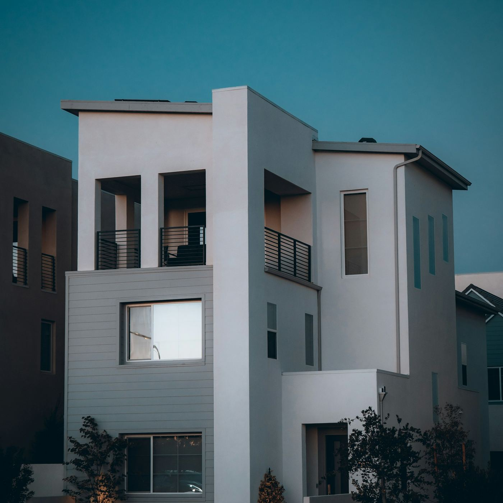
Arquitectura · Interiorismo · Mobiliario · Construcción
Diseñamos, construimos y amoblamos casas para vivirlas de día y de noche, en Medellín y en todo el país.
Agenda tu citaCasa Mirador · 3 plantas · 2025
01 — El estudio
Lumbre es un estudio de arquitectura e interiorismo. Diseñamos casas con luz propia: claras de día, cálidas de noche y resueltas hasta el último detalle.
Un solo equipo de principio a fin · Medellín · Desde 2012
0,0/5 Calificación de clientes · 24 reseñasCasas pensadas desde el lote
Espacios para vivirlos, no solo para mirarlos
Hecho a la medida de cada rincón
Con un solo responsable de obra
La luz como un material más
Tiempos y presupuesto a la vista
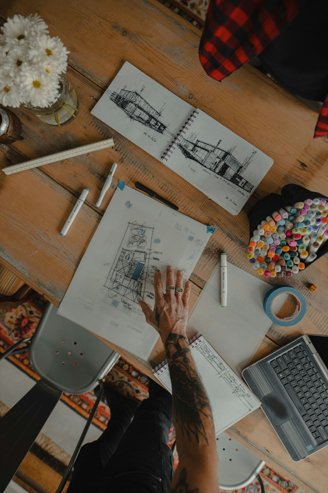
«Una casa se diseña dos veces: una para el día y otra para la noche. Si la segunda sale bien, la primera casi siempre también.»
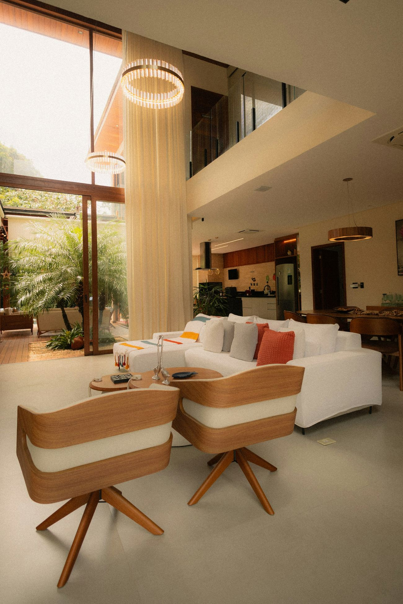
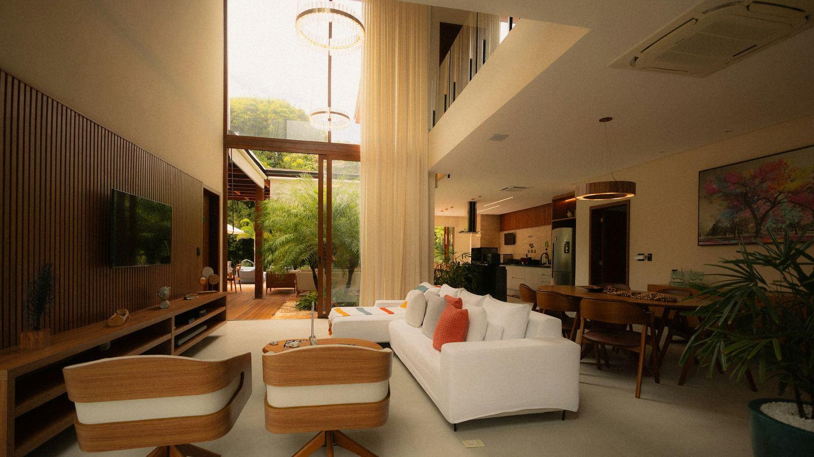
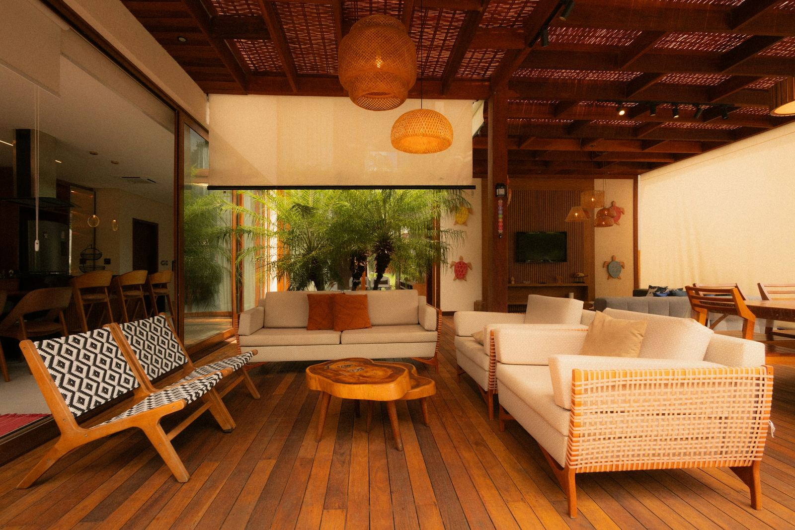
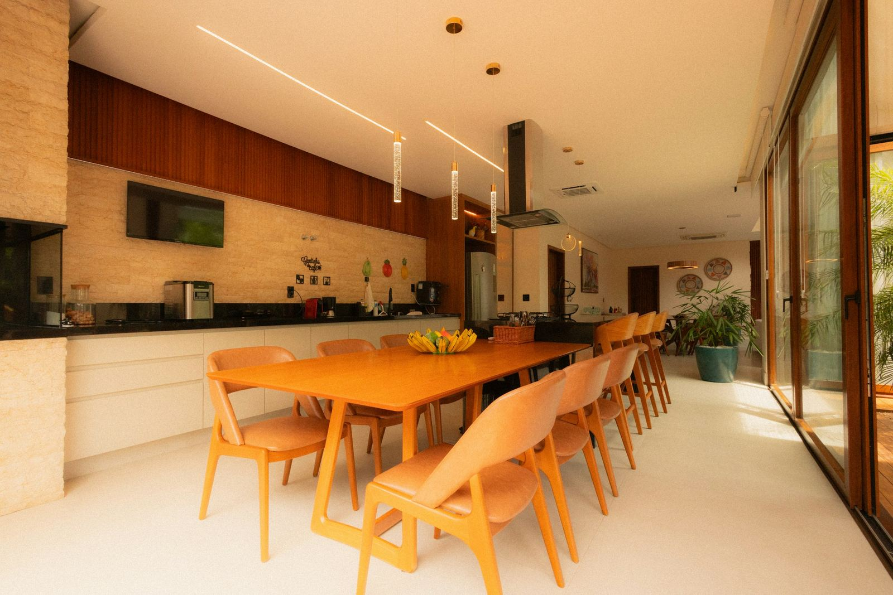
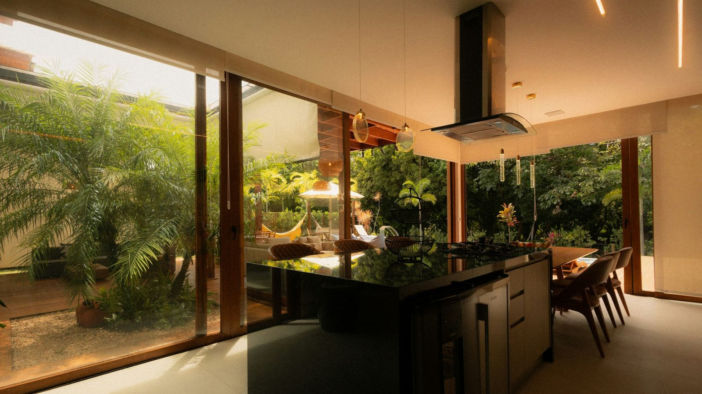
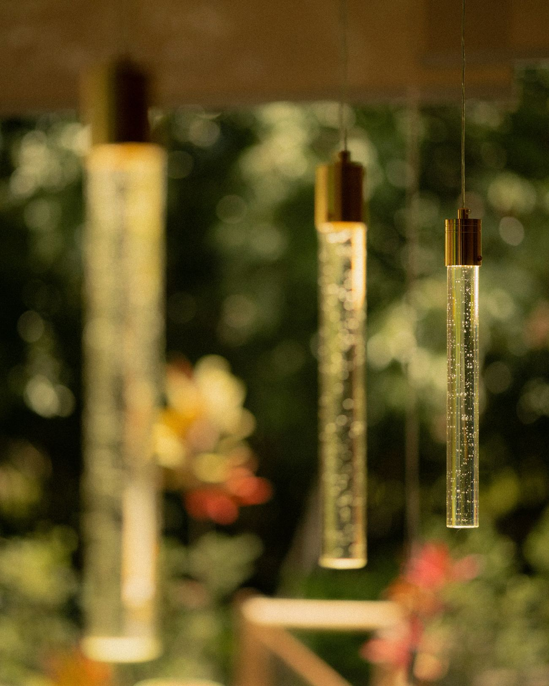
Recorre la Residencia Arrayán
Sala · 1/6
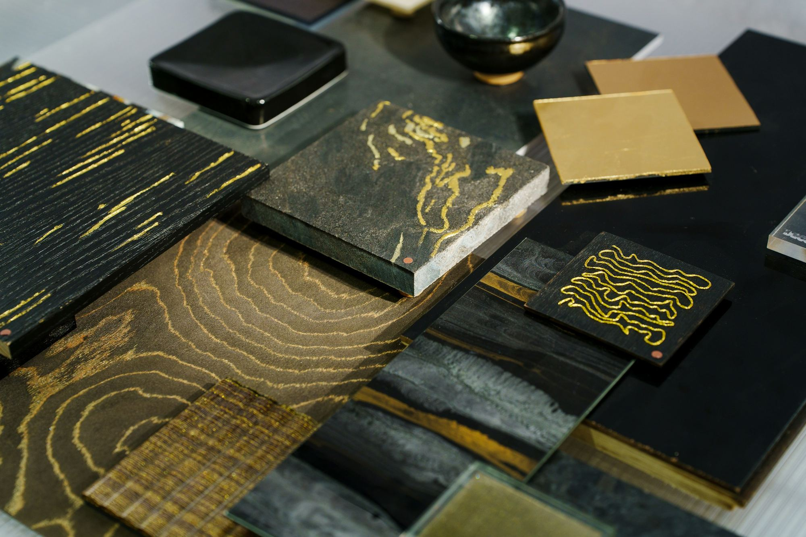
02 — Showroom
Ven a tocar los materiales antes de decidir: piedras, maderas y metales de tu próxima casa, sobre una misma mesa.
Showroom y materioteca · Medellín · Con cita previa
Más de 300 muestras de proveedores nacionales
03 — Proyectos
Casas, interiores y espacios para recibir: cada uno pensado para cómo se vive de día y cómo se ve de noche.

01 · Interiorismo · Costa Caribe
Un comedor abierto al mar: vidrio de piso a techo y una sola mesa larga para toda la familia.
02 · Interiorismo y mobiliario
Maderas cálidas, una doble altura abierta al jardín y muebles hechos para la casa.

03 · Arquitectura e interiorismo
Un volumen de piedra oscura guarda la chimenea y ordena la sala, el comedor y el estudio.
 04 · Costa Caribe · 286 m²
04 · Costa Caribe · 286 m²
Una casa blanca para vivir afuera: patio, piscina y una sala en doble altura por donde cruza la brisa.
Ver proyecto →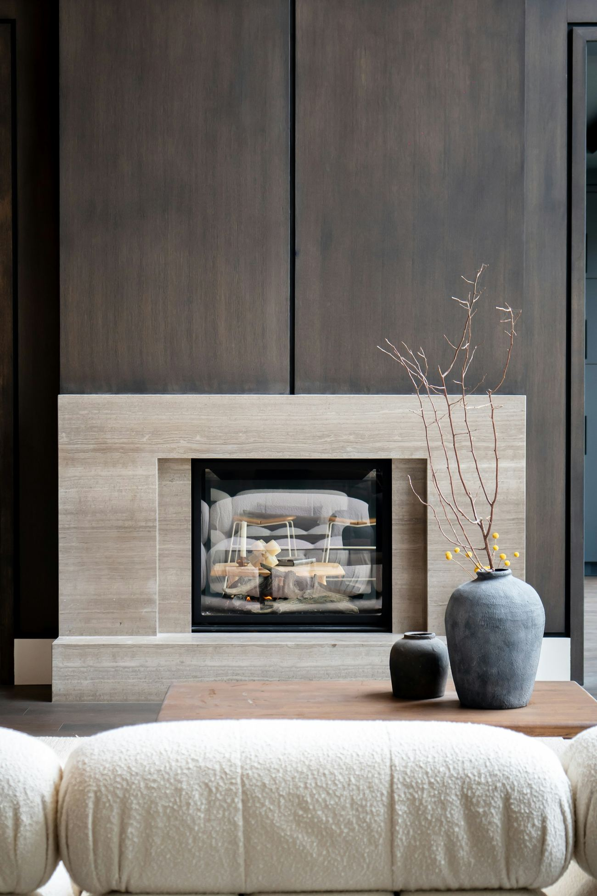
05 · Interiorismo · Medellín
Travertino, madera oscura y una chimenea que se enciende al caer la tarde.
04 — Clientes
4,9/5 Encuesta de cierre de obra · 31 clientes«Entendieron cómo vivíamos antes de dibujar una sola línea.»
«Un solo equipo, un solo cronograma y ninguna sorpresa en la obra. Nos entregaron la casa con los muebles puestos.»
«De noche la casa se ve todavía mejor que en los planos. La iluminación la pensaron desde el primer boceto.»
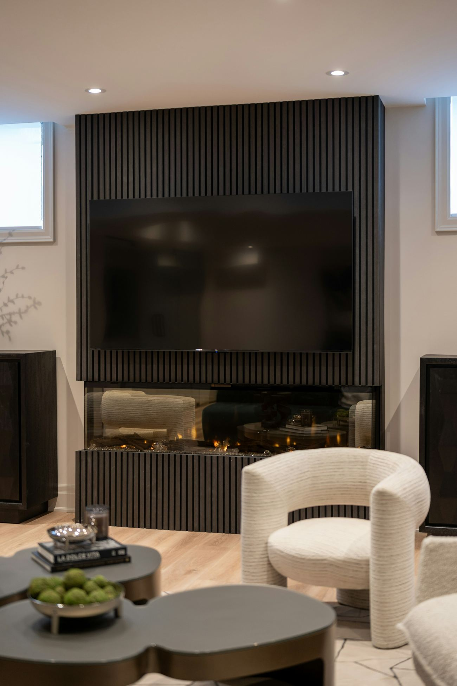
05 — Agenda tu cita